제1장 서론
최근 국내의 석유화학산업은 큰 기로에 직면하고 있다. 대내외 경기침체로 인한 수요부족과 중국 및 중동에서의 공격적인 석유화학 공장의 증설로 인한 공급과잉으로 인한 극한 생존 경쟁으로 몰리고 있는 상황이다. 최근에는 롯데케미칼로 인한 롯데그룹의 유동성 문제가 거론될 정도이다. 이러한 상황에도 불구하고 LG화학은 다른 국내의 석유화학사와는 다른 모습을 보여주고 있다. 미국 화학 협회(ACS)에서 발간하는 C&EN이 선정한 2024년 Top 50 Chemical Company에서 2년 연속 10위안에 들었으며, 2024년에는 2023년보다 3단계 상승한 Global 4위에 랭크되었다. 국내 화학기업 순위에서도 경쟁사인 롯데케미칼이나 한화토탈에너지스를 크게 앞서며 독보적인 1위를 지키고 있다.
그림 1. Global 화학기업 순위(2024, C&EN)
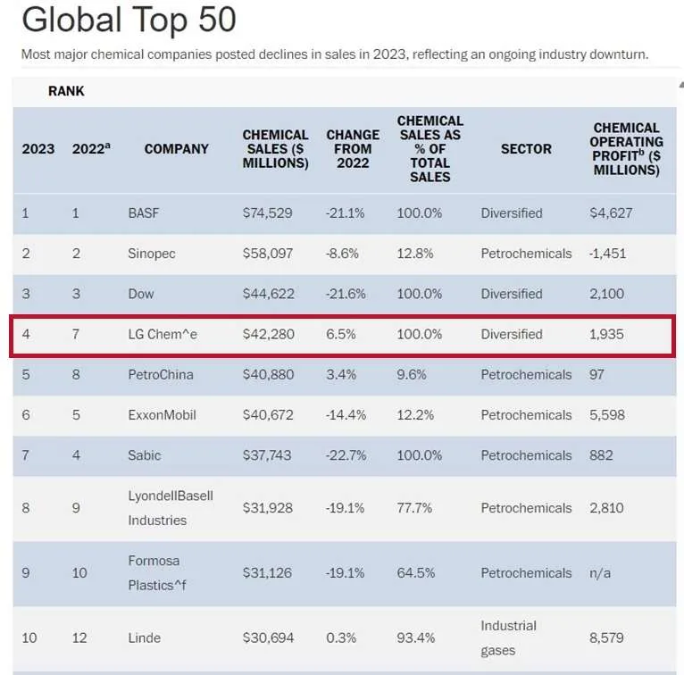
그림 2. 국내 화학기업 순위 (2023, 한국석유화학협회)
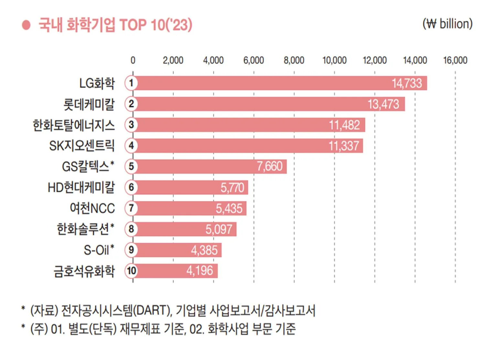
그림 1. Global 화학기업 순위(2024, C&EN)
그림 2. 국내 화학기업 순위 (2023, 한국석유화학협회)
이러한 LG화학의 성장과 발전의 이유로 언론이나 IR보고서에서는 재무적인 성과, 성공적인 규모의 경제 달성, 그리고 R&D를 통한 지속적인 성장 동력을 뽑고 있다.
LG화학 역시 생산 효율화를 통한 원가 경쟁력 확보나 생산 Capacity 증대 등을 통한 재무적인 혁신에도 상당한 노력을 기울이고 있다. 또한, 그에 못지 않게 LG화학은 LG에너지솔루션 분사와 같은 사례를 통해 성공적인 R&D를 통한 기술 혁신을 바탕으로 기업의 성장을 이뤄내기도 하였다. 하지만 최근 2~3년간 대외 환경의 불확실성 및 범용 제품의 과다 공급 등으로 인한 매출과 영업이익이 매우 나빠지고 있다. 이러한 상황을 극복하기 위한 방법의 일환으로 LG화학은 고부가 소재 및 친환경 소재 개발을 위한 R&D 투자를 지속적으로 추진하고 있다.
그림 3. 석유화학산업의 분기별 수익성 추이
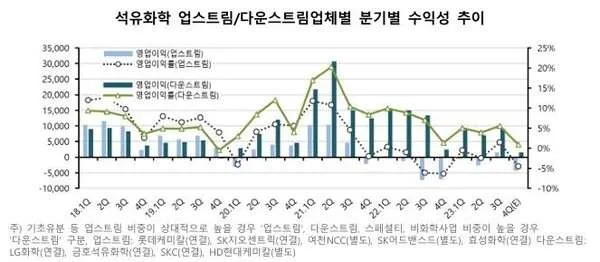
그림 3. 석유화학산업의 분기별 수익성 추이 이러한 배경에는 LG화학의 R&D가 갖고 있는 고유한 특성이나 핵심역량을 기반으로 한 기술혁신을 통해 위기상황을 극복하겠다는 전략이 깔려있는데, 그러한 결정의 근거를 본 사례 연구를 통해 살펴보고자 한다.
상기의 결정 근거를 살펴보기 위한 사례로 CNT개발을 선정하게 된 배경으로는 우선 LG화학에서 추진한 R&D 과제 중에서 Commercialization에 성공한 과제이기 때문이다. 두번째로는 CNT개발의 시작 시점이 2011년으로 2010년대에 LG화학에서 적극적으로 도입하였던 Open Innovation 제도가 잘 적용된 과제로 판단하였다. 마지막으로는 2000년대 후반과 현재의 LG화학의 경제적 상황이 유사할 뿐만 아니라, R&D역할을 강조하던 분위기 속에서 고부가 소재를 개발하려는 전략의지가 비슷하였기에 CNT를 선정하게 되었다.
그림 4. LG화학의 매출액과 영업이익 추이 (1999~2006)
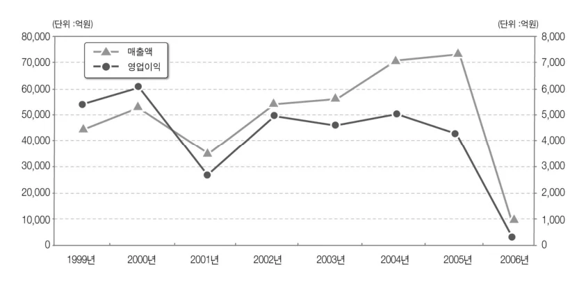
그림 5. LG화학의 매출액과 영업이익 추이 (2013~2024)
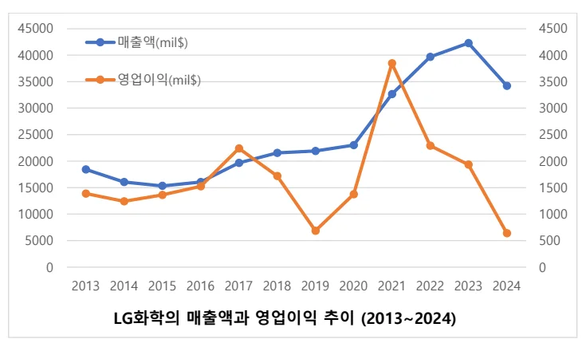
그림 4. LG화학의 매출액과 영업이익 추이 (1999~2006)
그림 5. LG화학의 매출액과 영업이익 추이 (2013~2024)
LG화학의 꾸준한 성장 및 위기를 극복하기 위한 전략의 일환으로서 LG화학 LG화학의매출액과영업이익추이(2013~2024)
R&D만의 고유한 특성을 비교적 최근 진행된 R&D 과제인 CNT 개발 프로젝트를 통해 찾아보고자 한다. 본 연구의 주요 질문은 아래와 같다.
1. LG화학의 CNT 개발 사례를 통해 과거 논문(2010)에서 언급된 LG화학의 개방형 혁신 도입효과를 확인하고, 2. 이를 통해 LG화학 R&D의 핵심역량과 개방형 혁신이 어떠한 시너지를 창출하였는지 고찰함으로써, 3. 최근 LG화학이 당면하고 있는 범용 소재의 한계성과 고부가/친환경 소재 개발을 통한 LG화학의 추가 도약을 위한 기술 혁신 전략 방향에 대해서 살펴보고자 한다.
본 연구에서는 우선 국내 석유화학산업에 대해서 간략하게 알아보고, 석유화학산업의 특징 중 R&D 분야의 특성과 산업에서 발생하는 기술혁신의 종류와 특징을 알아보고자 한다. 산업에서 특징적으로 나타나는 기술혁신 중에서 LG화학에서도 확인할 수 있는 기술혁신 중 하나인 Open Innovation에서 대해서 보다 자세히 알아보기 위해 과거 논문들을 확인할 예정이다. 과거 논문을 통해서 확인된 LG화학 R&D의 특성이 CNT 개발 프로젝트에서 어떻게 적용되고 활용되었는지 살펴보고 이를 통해 LG화학만의 고유 핵심 역량이 무엇인지 고찰하고자 한다. 이를 통해 현재 국내석유화학 산업이 처한 위기를 타파하기 위해서 필요한 기술 전략이 무엇인지 추론해보고자 한다.
그림 6. 연구흐름도
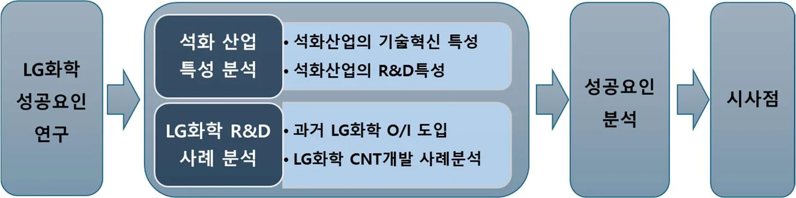
그림 7. CNT 관련 국내 특허 건수
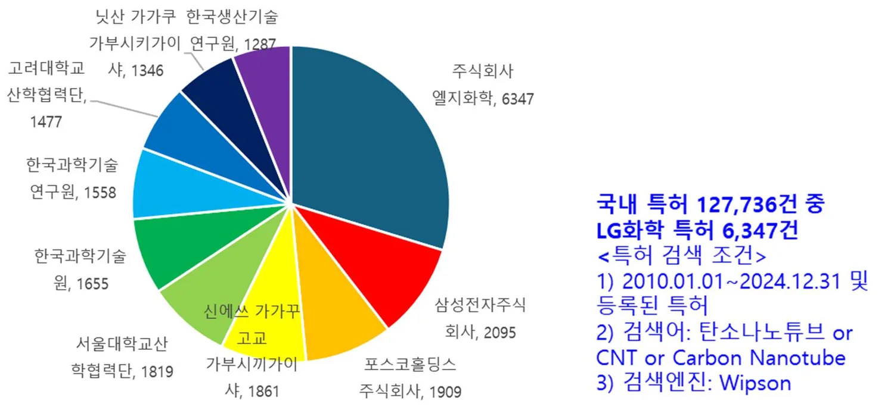
그림 8. LG화학 CNT 특허 발명인 순위
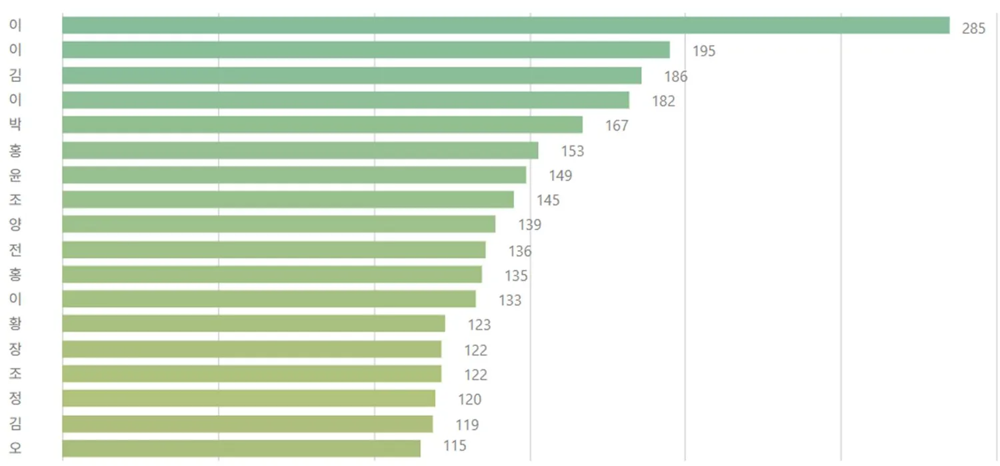
표 1. 인터뷰 질문지
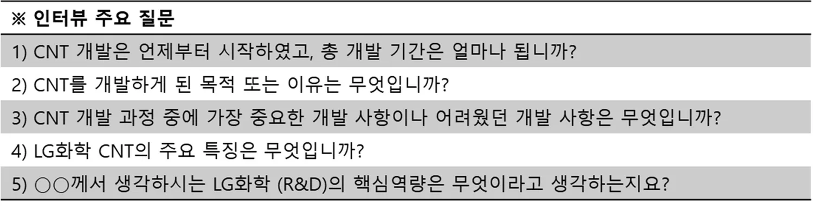
그림 6. 연구흐름도 본 사례 연구에서는 크게 문헌조사와 관계자 인터뷰를 통한 조사방법이 이용되었다. 문헌조사의 경우에는 석유화학산업의 기술혁신 관련된 논문과 LG 화학의 기술혁신 관련 논문 및 문헌을 참조하여 과거에 주로 연구되었던 기술혁신 이론을 확인하였다. 관계자 인터뷰의 경우에는 CNT개발에 참여하였던 연구원 및 엔지니어에게 CNT 개발에 대해서 인터뷰를 진행하였다. 다만, CNT 개발이 약 15 년 이전에 시작되었기 때문에 초창기부터 참여하였던 인원 중에서 인터뷰 대상자를 찾는 것이 매우 어려웠다. 인터뷰 대상자의 기준은 CNT 관련 특허 중에서 출원인이 LG 화학인 특허 중에서 발명인으로 가장 많이 참여한 개발자로서 현재 LG 화학 재직자 중에서 선별하였다.
그림 7. CNT 관련 국내 특허 건수 그림 8. LG화학 CNT 특허 발명인 순위 인터뷰는 오프라인으로 2 차에 걸쳐 진행하였고, 최종 응답에 대해서는 해당 인터뷰 대상자에게 확인을 받았다. 2 차 질문은 아래의 1 차 질문의 응답에 대한 세부질문으로 진행하였다. 다만, 2 차 질문의 경우에는 기술적인 부분이 다수인 관계로 본 보고서에는 1 차 질문지를 아래 표와 같이 수록한다.
표 1. 인터뷰 질문지
제2 장 이론적 배경
2.1.1 개요
탄소소재는 탄소원료로 제조된 소재로, 다양한 결합이 가능한 탄소특성을 이용한 소재이다. 탄소의 결합 상태, 소재 특성 등에 따라 크게 3 가지로 분류되고 그 안에서 세부적으로 6 개의 소재로 나눠진다. 그 중의 CNT 는 기능성 탄소소재의 한 종류이다. 각 탄소소재의 특성은 아래 표와 같다.
표 2. 탄소소재의 유형과 특성
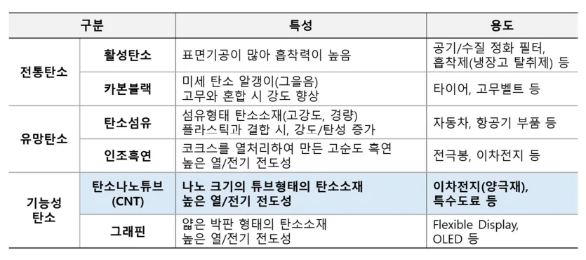
표2. 탄소소재의 유형과 특성
2.1.2 국내 탄소소재 산업의 현황
국내 탄소산업은 2020 년 기준으로 산업 가치사슬을 완성하지 못한 상황이다. 그 이유는 프리미엄급 탄소소재 생산기술이 부족하기 때문이다. 국내의 경우, 일부 소재, PAN 계 탄소섬유, 카본블랙 및 CNT 를 제외한 대부분의 제품군을 완성하지 못한 상황이다. 특히, 중간원료를 이용한 탄소소재는 기술 및 경험부족으로 생산기반이 전무한 상황이다. 두번째는 우리나라의 기술력으로는 중간원료를 독자적으로 생산할 수 있는 능력이 부족하다. 중간원료를 제조하는 기술의 난이도가 매우 높으며, 상용화를 위한 Know-how 성 공정기술 확보를 위해서는 대규모 예산이 필요한 실증 사업이 필요하다. 세번째로는 해외기술을 도입하는 것이 불가하다는 점이다. 프리미엄급 피치/침상 코크스를 제조할 수 있는 회사는 6 개 회사에 불과하며, 이들은 미국과 일본의 기업이다. (JX NOE, C-Chem, Mitsubishi [일본], Conoco Philips, Seadrift, Graftec [미국]) 이에 각국의 정부는 이들의 기술이 해외로 유출되는 것을 엄격하게 금지하고 있다. 마지막으로는 탄소소재의 높은 의존도와 기술선진국과의 기술격차가 갈수록 심화되고 있다는 점이다. 기술 선도국 대비 원천기술이 부족하다보니 직접 생산보다는 수입에 의존하는 경향이 크다. 그리고 기술 후발국인 중국과 같은 나라에서는 정부의 대규모 투자 지원을 통해 관련 기술을 확보하고 있어 우리나라의 기업은 양쪽에서 압박을 받고 있는 상황이다. 탄소소재 산업의 가치사슬은 아래와 같으며 우리나라가 확보하고 있는 제조기술 분야와 미확보 기술을 구분하여 표시하였다.
그림 9. 국내 탄소산업의 가치사슬
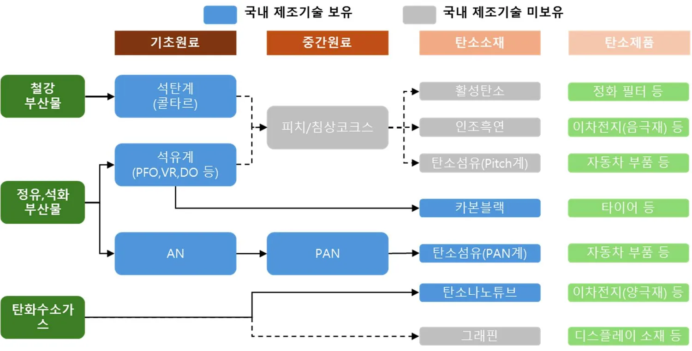
그림 10. CNT 구조 및 종류
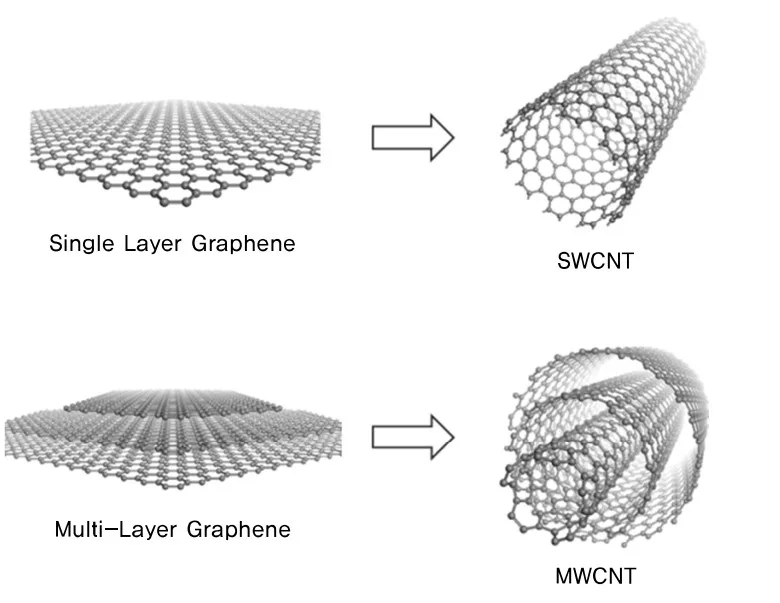
그림 11. 2021~2026 년 각국 CNT 시장 규모 및 전망
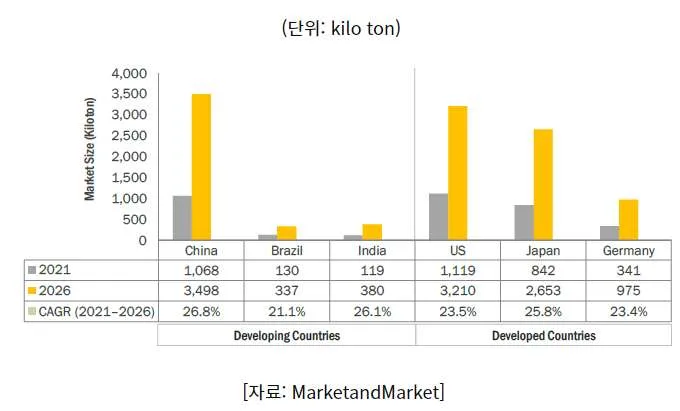
그림 12. 북미 CNT 시장에서 주요 참여자의 매출액(2020 년)
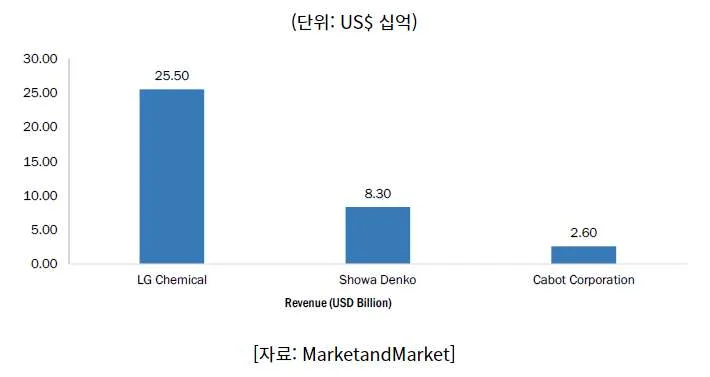
그림 9. 국내 탄소산업의 가치사슬
2.2 CNT(탄소나노튜브) 개요
CNT 는 하나의 탄소 원자가 3 개의 다른 탄소완자와 결합된 고분자 동소체이다. CNT 는 1991 년 이지마 스미오 박사가 발견한 물질로 단층 또는 다층의 그래핀이 원통형으로 말려있는 구조의 탄소소재이다. CNT 의 구조적 특징으로는 직경이 수 나노미터에 불과한 튜브 모양의 구조이며, 단일벽(SWCNT)과 다중벽(MWCNT) 형태로 존재하고, 그래핀 시트를 원통형으로 말아 놓은 것과 유사한 구조를 갖고 있다.
그림 10. CNT 구조 및 종류 CNT 는 다음과 같은 우수한 물리적 특성을 갖고 있다. 1) 뛰어난 기계적 강도: 강철보다 100 배 이상 강하면서 무게는 1/6 에 불과하며, 15% 이상 변형되어도 견딜 수 있는 높은 탄성을 갖고 있다. 2) 우수한 전기 전도성: 구리보다 뛰어난 전기 전도성을 갖고 있고, 금속성 또는 반도체성을 가질 수 있어 다양한 전자 소자에 활용 가능하다. 3) 높은 열 전도성: 다이아몬드와 비슷한 수준의 열 전도도를 갖고 있다. 4) 큰 표면적 대 부피 비율: 다른 물질과의 상호작용을 증가시키고 반응성을 향상시킬 수 있다. 5) 화학적 안정성: 고온 및 부식성 물질에 대한 내성을 갖고 있다. 6) 광학적 특성: 다양한 파장의 빛을 흡수하고 방출하는 능력이 있다. 이처럼 CNT 는 탁월한 물리적 특성을 갖고 있기에 첨단 제조 산업의 기초소재로서 사용되고 있다. 주로 사용되는 분야는 전자 소재(트랜지스터, 센서, 디스플레이 등), 에너지 저장 소재(리튬이온 배터리, 연료전지, 태양전지 등), 복합 재료(항공우주, 자동차, 스포츠 장비 등), 바이오메디컬 소재(약물 전달, 조직 공학, 바이오센서 등) 및 환경 처리 소재(수처리, 가스 정화 등) 등이다.
2.3 CNT Market 분석
CNT 시장규모는 2021 년 기준 전세계적으로 87 억 6,309 만 달러이다. 2021 년부터 2026 년까지 연평균 24.4% 성장을 할 것으로 전망하고 있다. 참고로 2021 년 기준 전세계 CNT 시장에서 북미 시장이 차지하는 비율은 29.2%이고, 그 뒤를 중국과 일본이 뒤따르고 있다.
그림 11. 2021~2026 년 각국 CNT 시장 규모 및 전망 CNT 시장이 크게 성장하게 될 요인으로는 이차전지의 성장과 관계가 있다. CNT 는 우수한 전기전도성을 보유하고 있기에 양극재 도전재로서의 활용과 그 성능을 이미 확인이 되고 있다. 이에 따라서 이차전지를 생산하는 중국, 일본, 미국에서 CNT 의 수요가 급증할 것으로 전망된다. 다만, 일본과 중국의 경우에는 자체적으로 CNT 를 생산할 수 있는 회사들이 있고, 이차전지 제조기업도 이미 있는 상황이기에 국내 CNT 기업들이 해당 국가 시장에 진입하는 것은 쉽지 않을 것으로 예상된다. 따라서 LG 화학과 같은 국내 CNT 생산 기업들은 대부분 국내 이차전지 제조업체에 납품을 하고 있으며, 이는 북미시장 및 유럽시장에서의 매출액으로 확인이 가능하다. LG 화학의 경우, 북미시장에서 LG 화학은 255 억 달러의 매출액을 달성함으로써 상당한 북미 시장의 점유율을 확보하고 있음을 확인할 수 있다.
그림 12. 북미 CNT 시장에서 주요 참여자의 매출액(2020 년) CNT 시장의 주요 참여자로는 국내에서는 LG 화학, 금호석유화학, 제이오 등이 있고, 해외에는 Nanocyl(벨기에), Showa Denko, Toray(이상 일본), Cabot, Cheap Tubes(이상 미국) 등이 있다. 국내 기업의 CNT 기술 수준은 2020 년 기준 산자부에서 평가한 결과에 따르면 공정기술은 미국 또는 일본과 대등한 수준이나 원천기술 및 특허가 취약한 것으로 나타났다. 세계 1 위 기술을 보유한 미국과 비교하면 약 95% 기술력 수준으로 3 년 정도의 기술 격차가 있다고 평가하였다.
2.3.1 LG 화학의 CNT Market
LG 화학에서 목표로 하는 CNT 시장은 MWCNT 분산액 시장이다. CNT 분산액은 CNT 도전재의 제품으로서 이차전지 시장의 성장에 따라 동반 성장하는 시장으로 볼 수 있다. SNE 시장보고서(’23)에 따르면 Global CNT 분산액 시장은 ‘22 년도에 15 만톤 규모에서 ‘26 년 35 만톤, ‘30 년에는 44 만톤까지 성장할 것으로 예상하고 있다. 국가 별 시장 규모는 중국이 65%, 그 외 지역은 35%로 예상하고 있다. 중국 시장 진입은 중국 내 경쟁업체가 다수 포진하고 있다보니, 그 외 지역인 북미 및 유럽 시장을 타겟으로 하고 있다.
그림 13. 글로벌 MWCNT 분산액 수요(만톤)
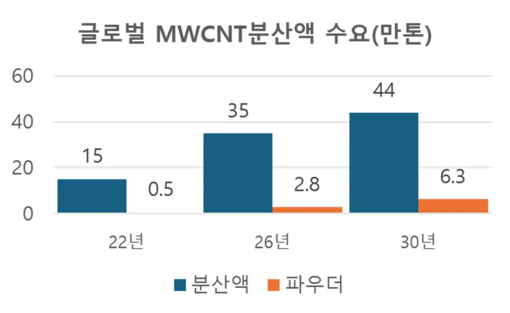
표 3. MWCNT 분산액 시장 규모
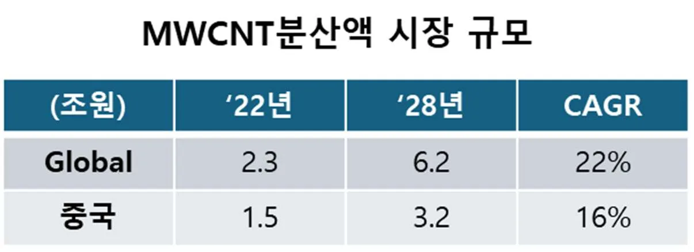
표 4. 개방형 혁신의 유형
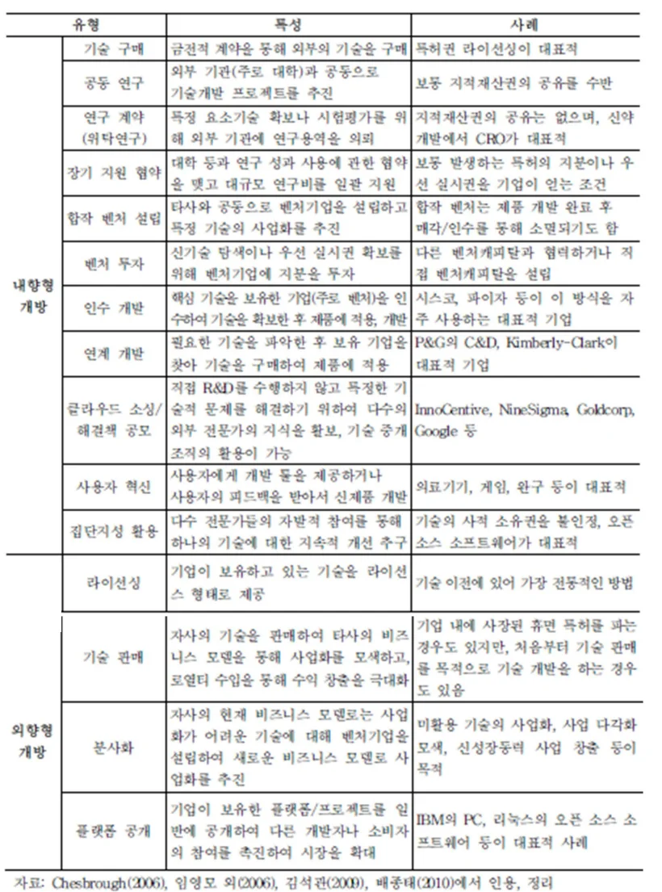
그림 13. 글로벌 MWCNT 분산액 수요(만톤)
표3. MWCNT 분산액 시장 규모 CNT 분산액의 핵심 기술 사항은 파우더 자체의 성능향상과 이를 최대한 구현하는 분산 기술이다. CNT 성능 향상을 위해서 MWCNT 의 Bundle 화 및 높은 비표면적화가 필요하다. 또한 분산기술의 향상을 위한 최적의 분산제 발굴이 필요하다.
2.4 Open Innovation 이론
개방형 혁신은 Chesbrough 가 “기업이 안으로의 지식 흐름(inflow)과 밖으로의 지식 흐름(outflow)을 적절히 활용하여 내부의 혁신을 가속화하고 혁신의 외부 활용 시장을 확대하는 것”으로 설명하였다. 개방형 혁신은 기업들이 내부 아이디어뿐 아니라 외부 아이디어도 활용할 수 있고, 또 활용해야 하며, 자사의 기술을 상업화하여 시장에 진출할 때 내부뿐 아니라 외부 경로도 사용할 수 있고, 또 사용해야 함을 전제하는 혁신 패러다임이라고 정의하고 있다. 또한, 김석관(2009)은 “개방형 혁신이란 기업이 연구, 개발, 상업화에 이르는 일련의 혁신 과정을 개방하고 외부 자원을 활용함으로써 혁신의 비용을 줄이고 성공 가능성을 제고하며 부가가치 창출을 극대화하는 기업 혁신의 방법론을 의미”하는 것으로 해석하면서 “기업이라는 경계의 제약 없이 아이디어, 기술, 그리고 지적자산이 안팎으로 흐를 수 있도록 R&D 시스템을 재구축하려는 시도”로 정의하고 있다. 개방형 혁신의 유형은 아래 표와 같이 크게 내향형 개방과 외향형 개방으로 구분할 수 있다.
제3 장 석유화학산업의 기술혁신
3.1 국내 석유화학산업
국내의 석유화학산업은 원유를 정제해서 얻어진 납사 등의 원료로부터 기초 유분을 생산하고, 이를 재가공하여 중간원료 및 3 대 유도품(합성수지, 합섬원료, 합성고무)를 제조하는 산업이다.
그림 15. 한국 석유화학산업 Supply Chain
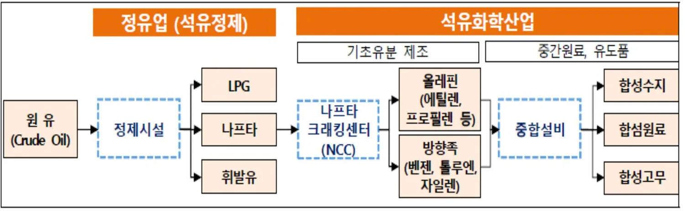
그림 16. 한국 석유화학제품 수급추이
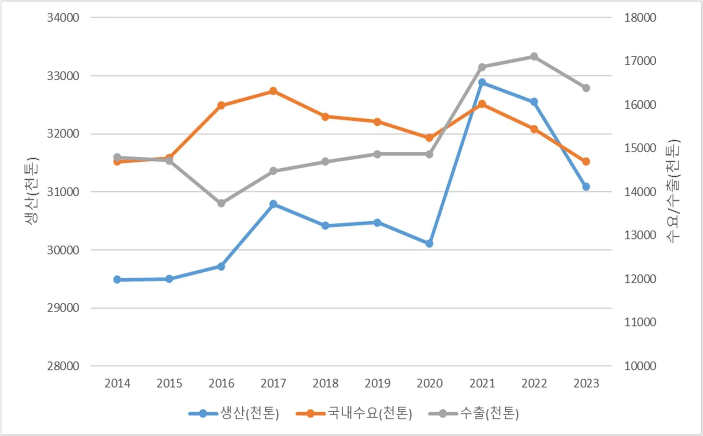
표 5. 한국 석유화학산업 무역수지
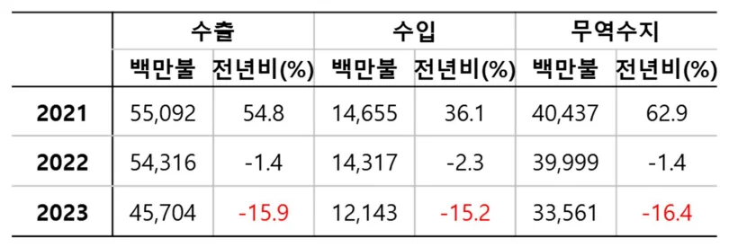
그림 15. 한국 석유화학산업 Supply Chain Covid 를 지나면서 경기 회복과 함께 2021 년까지 전방 산업의 경기 호전 등으로 업황이 개선되었으나, 2022 년 이후에는 수출 및 내수 부진으로 만성적인 업황 부진 및 성장이 둔화되고 있다. 그 중에서 주된 이유는 對 중국 수출 물량이 급격히 악화가 되었기 때문이다. 2010년 후반부터 최근까지 중국에서는 정부 차원에서 석유화학제품의 자급율을 올리기 위하여 중국 내에 NCC 및 PDH 증설을 공격적으로 진행하였고, 최근 해당 공장이 가동을 시작하게 됨에 따라 국내 석유화학사가 주로 생산하는 범용 소재의 시장 공급량이 수요량을 초과하게 됨에 따라 국내 기업들이 상당한 손실을 보고 있는 상황이다. 문제는 이러한 위기가 단발성에 그치지 않고 이후에는 중동국가의 석유화학 산업 진출 등이 예상됨에 따라 지속될 것으로 예상된다는 점이다. 이에 업계에서는 국가차원에서의 산업 조정 및 생산 경쟁력 강화를 위한 정책 지원을 요청하고 있는 실정이다.
그림 16. 한국 석유화학제품 수급추이 표 5. 한국 석유화학산업 무역수지
3.2 석유화학산업의 R&D 특성
석유화학산업에서의 기술혁신과 관련된 특성을 알아보기 위해 과거 논문을 조사를 한 결과, 크게 5 가지 특성을 확인할 수 있었다.
1) 자산의 공유자본 구조로 인한 기술혁신을 독점적으로 유지하기 어려운 산업; 무임승차(free ridership) 문제가 발생하기 쉬운 산업 2) 새로운 기술을 처음 사용하는 경우와 관련된 극심한 위험(안전성 확보 등)과 그에 따른 높은 실패 비용; “Fast Followers” 전략을 선호하는 산업 3) 산업의 혁신이 개념단계에서 광범위한 상업적 단계로 진행되는데 평균 16 년이 소요됨; “Slow Clockspeed”, “Low-and Medium-tech” 그리고 “Technologically timid” 한 산업 4) 석유 및 가스 생산업체는 역사적으로 매출액의 평균 1%미만을 R&D 에 투자; Low R&D Intensity 한 산업 5) 역사적으로 제품 혁신보다는 공정 혁신이 주도한 산업 상기와 같이 석유화학산업은 기술혁신과 다소 거리가 있는, 오래된 관습이 지배하는 산업으로 평가되고 있음을 확인할 수 있다.
3.3 석유화학산업의 기술혁신 요인
그럼에도 석유화학산업 내부에서는 기술혁신을 위하여 여러 노력을 하고 있고, 그러한 결실을 거두는 기술 분야도 있다. 석유화학산업을 지속하기 위해 기술과 혁신의 역할에 대해서 연구한 논문(Hossein,H., 2017, The role of innovation and technology in sustaining the petroleum and petrochemical industry)을 통해 석유화학산업의 기술혁신이 발생하게 되는 요인을 아래와 같이 정리하고 있다.
표 6. 석유화학산업의 기술혁신 요인
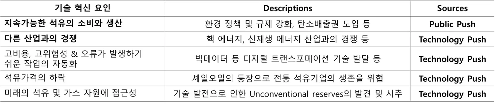
그림 17. LG 화학과 경쟁사 R&D 현황
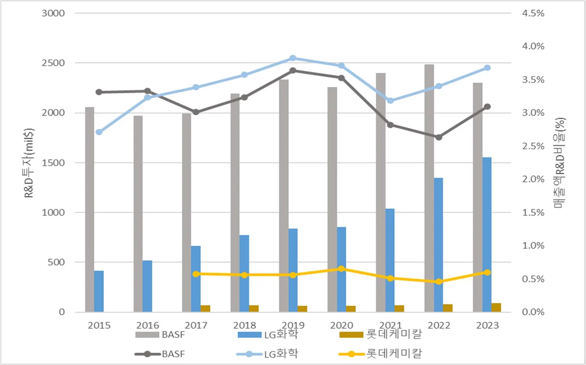
표6. 석유화학산업의 기술혁신 요인 상기 논문에 따르면 석유화학산업에서의 혁신은 정부나 대중의 요구와 새로운 기술의 발전과 적용으로 인한 혁신이 주요 원인임을 알 수 있다. 의외로 고객의 요구로 인한 혁신은 언급되지 않고 있는데, 이는 해당 논문이 석유화학산업 외에도 Oil & Gas 와 같은 원유정제산업도 함께 검토를 한 논문이다 보니, 조사대상 기업의 대부분이 B2B 기업이면서 수직계열화를 이룬 기업이 대다수이기 때문에 수요자 중심의 요인은 크게 나타나지 않은 것으로 보인다. 오히려 수요자의 요인보다는 에너지 섹터 내에서 경쟁 관계가 기술혁신의 원동력으로 작용함을 확인할 수 있다.
3.4 LG 화학의 R&D 현황
LG 화학의 R&D 는 1979 년 대덕 중앙연구소를 개소함으로써 본격적으로 시작되었다. LG 화학의 R&D 투자액 규모는 2023 년 기준으로 15 억달러(2 조 원)에 달하며, 이는 LG 화학 매출액 대비 약 3.5%를 상회하는 규모이다. Global 석화산업의 R&D 평균 투자규모가 매출액 대비 약 1% 내외 수준임을 감안하면 약 3 배 이상을 투자하고 있음을 확인할 수 있다. BASF 의 경우에도 고부가 및 Specialty 소재를 지속적으로 개발하기 위한 R&D 투자규모가 세계 1 위 수준이며 투자 비중도 3%내외를 꾸준하게 유지하고 있다. 특징적인 것은 LG 화학은 R&D 투자 규모는 BASF 에 비해 낮긴 하지만, 투자 비중의 경우에는 2016 년 이후로 BASF 보다 상회하여 투자를 진행하고 있다는 점이다. 이러한 점은 LG 화학이 BASF 의 Fast Follower 로서 그 격차를 줄이기 위하여 R&D 에 많은 힘을 쏟고 있다는 증거로 볼 수 있을 것이다.
그림 17. LG 화학과 경쟁사 R&D 현황 과거 LG 화학의 R&D 성공 사례는 크게 ABS 독자 공정개발을 통한 생산 Capacity 를 세계 2 위까지 달성한 것과 중대형 리튬 이차전지 개발을 통한 LG 에너지솔루션의 기업 분할 사례가 있다. 그 외에도 여러 성공 사례도 있지만, 그 몇 배 이상으로 스케일업이나 상업화에 실패한 연구과제도 많은 것도 사실이다.
3.5 LG 화학과 Open Innovation
3.5.1 LG 화학 Open Innovation 논문 조사
LG 화학의 Open Innovation 과 관련된 논문은 2009~2011 년에 걸쳐 약 5 건으로 확인되었다. 2000 년대 후반에 LG 화학은 Open Innovation 에 대해서 전사적으로 캡페인을 추진하였던 시기이다 보니, 관련 성과에 대한 논문이 발간된 것으로 보인다.
1) 변화관리 측면에서 본 LG 화학 기술연구원의 오픈 이노베이션 추진 사례 (양희승, 2011)
2) LG 화학의 개방형 혁신 도입과정과 우리나라 기업에의 적용에 관한 고찰 (양희승, 2010)
3) Open Innovation 추진 사례와 시사점: LG 화학기술연구원 사례를 중심으로 (이성만,2009)
4) 성공적인 Open Innovation 추진을 위한 변화관리와 조직문화 변혁: LG 화학 기술연구원 사례를 중심으로 (이성만, 2009)
5) 개방형 혁신의 산업별 특성과 시사점 (김석관, 2008)
3.5.2 LG 화학 Open Innovation 도입 과정
LG 화학의 Open Innovation 도입 과정에 대해 간단히 살펴보게 되면 2005 년말 주요 경영진의 지시를 받고 R&D 의 투자효과를 높이면서 연구자간 협력을 촉진하기 위한 방안으로 Open Innovation 도입을 착안하였다. 2006 년에 ‘Open Innovation 추진 팀’을 구성하여 본격적으로 도입을 시작하였다. 도입 초기에는 구성원들의 공감대를 형성하기 위한 i-Forum, KMS 와 같은 시스템을 구축하고, 구성원들의 참여를 위한 Tech Fair, 기술교류회(CoT) 활성화 활동을 진행하였다. 이는 Open Innovation 을 성공적으로 도입하기 위해서는 내부 연구자 간 협력 마인드 조성과 기존의 NIH(Never Invented Here) 및 WKE(We Know Everything)의 사고를 탈피하는 것이 중요했기 때문이다.
그림 18. LG 화학 기술연구원의 O/I 도입을 위한 활동 (2010)
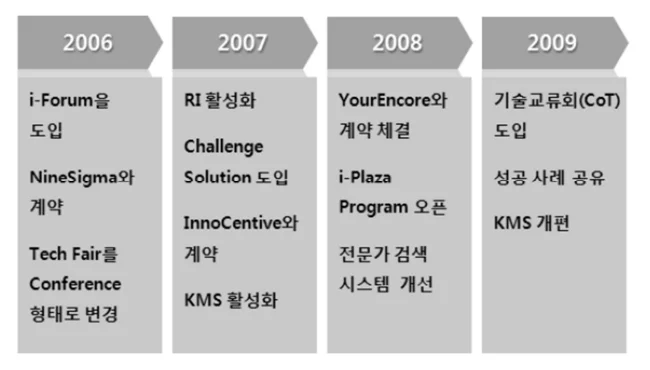
그림 18. LG 화학 기술연구원의 O/I 도입을 위한 활동 (2010) 구체적으로 도입활동을 살펴보면 i-Plaza, i-Forum 등 web 공간을 구축하여 신규 아이디어 제안, 연구 프로젝트의 기술적 문제를 공개 토론할 수 있도록 하였다. KMS 활성화를 위해 “전문가 활동” 시 KMS 마일리지를 지급하거나, “OI Award”를 통해 일년간 우수한 Open Innovation 활동을 한 팀 또는 연구원에게 포상을 하였다. 또한 “Challenge Solution 공모 제도”라는 프로젝트의 기술적 문제점을 사내 인적자원을 통해 해결방안을 찾는 시스템을 구축하여, 해결 방안을 제시한 연구원에게 최고 1,000 만원의 상금을 지급하거나, 완벽하지 않더라도 좋은 아이디어를 제시한 연구원에게는 소정의 상금을 지급함으로써 구성원의 참여 및 인식 변화 활동을 추진하였다.
3.5.3 LG 화학의 Open Innovation 운영
상기와 같이 구축된 Open Innovation 촉진을 위한 활동 외에도 실질적으로 Open Innovation 을 운영하기 위한 운영 체계를 구축하였다. 아래 그림과 같이 개인 레벨 수준의 이슈사항은 KMS 를 통해 해결하도록 하였고, 프로젝트 레벨 수준의 기술적 문제는 i-Forum 을 통한 해결을 시도해보고, 충분하지 않은 경우 Challenge Solution 에 제출하여 내부 인적 자원을 통해 해결책을 찾도록 하였다. 이를 통해서 해결하지 못한 기술적 난제는 외부의 Open Network System(Innocentive 등)을 활용하여 문제를 해결하는 방식으로 운영되었다.
그림 19. LG 화학 기술연구원 O/I 운영체계(2010)
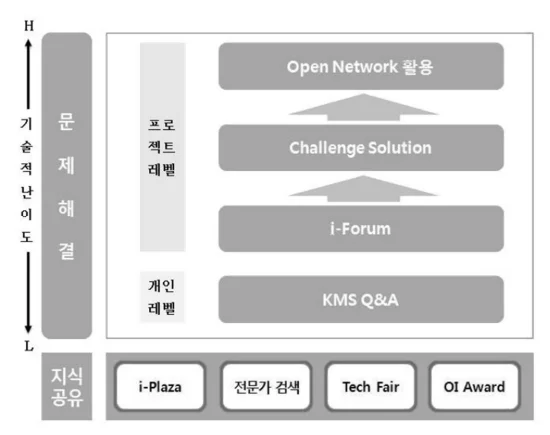
그림 20. LG 화학 기술전략 유형과 기준(2010)
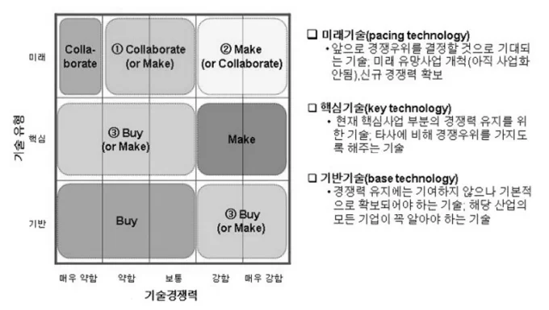
그림 21. LG 화학 Open Innovation 성과표
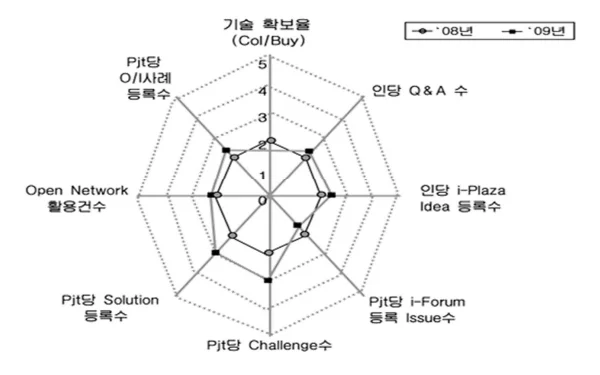
그림 19. LG 화학 기술연구원 O/I 운영체계(2010) 또한, 외부 연구협력 대상 과제를 선정하기 위한 기준을 수립하였다. 기술 유형에 따라 기반기술, 핵심기술, 미래기술로 분류하고, 이에 따라 LG 화학 기술연구원의 경쟁력을 5 단계로 평가함으로써 외부 협력이 필요한 기술 및 과제를 선정하였다.
그림 20. LG 화학 기술전략 유형과 기준(2010) 추가적으로 Open Innovation 에 대한 성과지표를 확인하기 위하여 성과 관리 절차 및 성과표를 수립함으로써 개인 및 팀 차원의 Open Innovation 성과를 정량화하였다. 하지만 Open Innovation 과 관련한 성과 측정에 대해서는 반대 의견도 있었는데, 이는 본인의 문제 또는 팀의 문제 해결보다 다른 팀의 문제해결에 보다 더 노력을 기울일 수 있다는 우려 때문이었다.
그림 21. LG 화학 Open Innovation 성과표
3.5.4 도입 성과와 한계점, 의의
Open Innovation 의 도입 성과는 여러 기술혁신 포럼에서 소개되고 성공사례로 발표되었다. 특히, 내부 연구자들 간 지식교류의 활성화를 통한 기술 개발이 이루어졌고, 연구 조직 내 장벽을 해소하는 효과가 있었다. 하지만, 한계점도 분명히 나타났다. 해당 논문 작성 시점이 Open Innovation 을 도입한지 3 년밖에 안된 시점이기에 혁신의 성과가 명확하게 나타나기에는 부족한 시간이었다. 그리고 외부 기술협력과 관련한 성과는 뚜렷하게 나타나거나 확인하기 어려웠다. 마지막으로 Open Innovation 의 특성 상 기술혁신보다는 조직 문화의 변화관리에 가까운 점이 한계점으로 꼽혔다.
3.5.5 現 Open Innovation 운영 현황
현재 LG 화학은 Open Innovation 을 전담하는 부서를 운영하고 있다. 해당 부서에서는 회사의 PTRM 과 연계한 대학과 국가 연구소 간 대외협력을 추진하고, Global R&D 혁신 센터를 관리하고 있다. 이를 통해 거점 별 주요 기술 현황을 모니터링하고, 필요 시에는 기술을 가진 회사와의 공동 개발 또는 투자 등을 검토하여 LG 화학의 연구 역량을 강화 및 가속화에 힘쓰고 있다. 위 논문에서 소개된 Open Innovation System 의 경우에는 개발 초기 단계에는 활발히 운영이 되었으나, 최근에는 해당 시스템을 활용하지는 않고 있다. 그 이유는 O/I 전담부서 주관 하에 대외 협력 및 투자를 중심으로 운영하고 있고, 내부 연구팀 간 협력은 조직 문화에 자연스럽게 녹아들어 굳이 시스템이 없이도 활발히 진행되고 있기에 시스템 활용을 하지 않고 있다. 또한 대부분의 O/I 업무가 내부 연구팀과 외부 기관과의 기술 협력에 중점을 두다 보니 내부 시스템의 활용도가 초기보다는 많이 낮아지게 되었다.
3.5.6 Open Innovation 과 CNT 개발 프로젝트의 관계
본 사례연구에서 다룰 CNT 개발 프로젝트는 LG 화학에서 도입한 Open Innovation 과 상당한 관계가 있을 것으로 판단되었다. 우선 CNT 개발 프로젝트가 시작된 시점은 LG 화학의 Open Innovation 이 활성화된 시점인 2011 년도이다. 이는 위 논문이 언급하고 있는 LG 화학의 Open Innovation 도입으로 인한 성과를 구체적으로 확인할 수 있는 사례로 생각되었다. 그리고 CNT 가 속한 탄소산업의 경우 외부의 기술도입이 어려운 산업이라는 점이다. 이는 외부 기술협력이 어렵기 때문에 외부 기술협력의 성과를 별도로 측정할 필요가 없고, 논문에서 다룬 LG 화학 기술연구원 내부의 지식 교류나 협업 관계 등을 구체적으로 확인할 수 있다. 이러한 점 때문에 CNT 개발 프로젝트를 통해서 LG 화학의 Open Innovation 이 실제 연구 개발에 어떠한 긍정적인 효과를 끼쳤는지 확인할 수 있을 것으로 생각한다.
제4 장 LG 화학의 CNT 개발
4.1 CNT 개발 계기
LG 화학의 CNT 개발의 초기 목적은 고부가 소재의 수요 증가에 따른 신소재 개발이었다. CNT 는 고분자 복합소재의 물성 보강용으로써 탁월한 성능을 갖고 있었기에 시장 경기의 사이클에 민감하지 않는 고부가 소재로 각광을 받았었다. 하지만 개발 과정 중에 이차전지 도전재로서의 성능이 기존 카본블랙 소재보다 뛰어나다는 점이 확인되어 개발 목표가 변경이 되었다. 당시에 그룹 차원의 미래 먹거리로 이차전지 개발에 투자가 집중되고 있었고, 이에 따라 이차전지의 부원료로서 국산화 및 SCM 다변화를 목적으로 개발이 되었다.
4.2 LG 화학의 CNT 개발 특징
LG 화학이 진행한 CNT 개발 프로젝트는 몇 가지 특징이 있다. 첫째는 CNT 의 원료 및 부원료를 수직 계열화함으로써 원가경쟁력을 확보할 수 있다는 점이다. 둘째는 LG 화학만의 독자기술을 개발함으로써 기존의 CNT 생산성을 개선하였다는 점이다. 여기서 독자기술은 유동층 반응기 개발과 신규 촉매 개발이 해당된다. 마지막으로는 LG 화학은 다른 경쟁사 대비 CNT 기술의 후발 주자였다는 점이다. 기존 경쟁사의 기술을 쫓아가는 Fast Follower 로서 LG 화학은 R&D 기간을 단축하기 위하여 Lab 개발과 공정기술 개발을 동시에 진행하는 Project Crashing 전략을 진행하였다. 이 전략의 경우 투자비용과 인적자원을 집중적으로 투입함으로써 전체 기간을 단축시킬 수 있다는 장점도 있지만, 반대급부로서 여러가지 문제가 동시다발적으로 발생하기 때문에 이러한 문제점을 효과적으로 처리하지 못하면 오히려 프로젝트 일정이 지연되고 추가적인 비용도 발생한다는 단점을 갖고 있다. CNT 개발 프로젝트 역시 이러한 문제점이 발생하였는데, 이를 어떻게 해결하였는지 CNT 개발자 및 관계자들의 인터뷰를 통해서 확인하였다.
그림 22. Project Critical Path Diagram
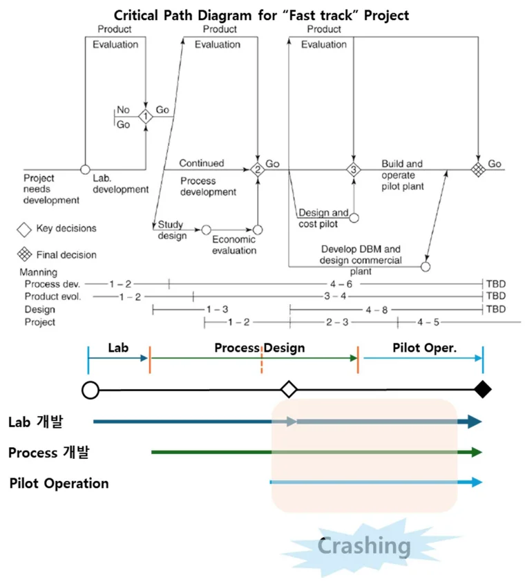
그림 23. LG 화학의 CNT 개발 Timeline
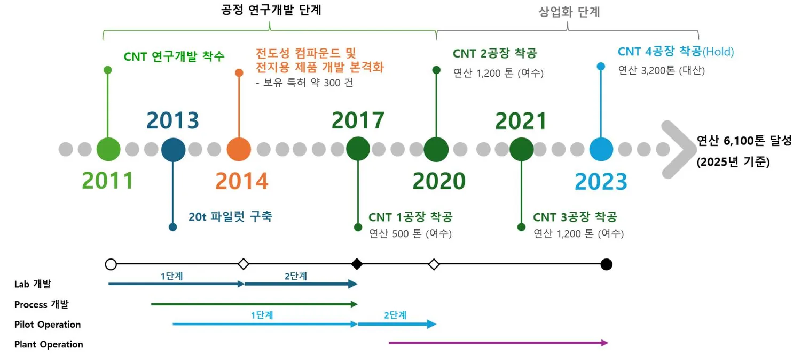
그림 22. Project Critical Path Diagram
4.3 CNT 개발 프로젝트의 주요 Timeline
CNT 개발 프로젝트는 2011 년 연구개발에 착수를 시작하여 2014 년까지 Lab 개발 (1 차)을 완료하였다. 이와 동시에 대전 기술연구원에 20ton 규모의 파일럿을 구축을 진행하였고, 이는 공정기술 개발이 완성되기 전에 파일럿을 짓기 시작하여 2013 년에 준공을 하였다. 공정기술 개발과 함께 파일럿 운전을 병행하였기 때문에 초반에 많은 오류와 이슈들이 발생하였고, 이를 해결하기 위한 Lab 연구가 추가적으로 이루어졌다. (2 차) 이를 통해 공정기술 개발이 2017 년경에 완료가 되었고, 이를 바탕으로 연산 500 톤 규모의 1 공장을 여수에 착공하게 되었다. 이와 함께 기술연구원에도 생산 Capacity 및 개선된 공정을 반영한 2 단계 파일럿을 추가로 구축하였다. 1 공장이 준공되고 시운전이 완료된 2020 년에 CNT 시장의 성장 가능성을 확인한 LG 화학은 바로 연산 1,200톤 규모의 2공장을 추가로 증설을 시작하였고, 1 년 후에는 추가적으로 3 공장까지 증설을 결정하였다. 이러한 투자 결정에는 CNT 시장의 성장 잠재력 뿐만 아니라 CNT 독자 기술에 대한 자신감이 있었기에 가능하였다. 기술력 없이는 수천억이 들어가는 증설 투자에 대한 결정을 할 수 없었을 것이다.
그림 23. LG 화학의 CNT 개발 Timeline
4.4 CNT 개발 주요 문제점
4.4.1 개발 목적의 변경
CNT 개발을 시작하게 된 목적은 고분자 복합소재의 신규 개발을 위한 보강용 소재로 활용하기 위함이었다. 전기전도성을 갖고 있는 CNT 를 기존 플라스틱에 추가하여 플라스틱 소재에도 전기전도성을 갖게 하고자 하였다. 이는 기존 플라스틱의 정전기 발생을 해소할 수 있어 전자 부품 소재나 다양한 구조의 소재로 활용하고자 하였다. 하지만, 그 사용량이 첨가제 수준으로 미미하여 매출액이 크지 않다는 점을 확인하게 되었고, 사용량을 크게 늘릴 수 있는 새로운 용도처를 찾고자 하였다. 이러한 소재의 특성을 LG 화학 Tech Fair 를 통해 다른 연구원들에게 알리고 CNT 개발팀의 고민을 공유한 결과, 전지연구소에서 양극재 도전재로 활용해보자는 제안을 받게 되었다. 이를 통해 CNT 의 수요가 크게 늘어나는 결과를 얻게 되었다.
4.4.2 Lab 개발과 공정개발 및 파일럿 구축을 동시에 진행
앞서 기술한 바와 같이 LG화학에서는 연구개발 기간을 단축하기 위하여 Lab 개발이 완료되기 전에 공정기술 개발을 시작하였고 동시에 파일럿도 함께 구축하였다. 완성되지 않은 공정을 바탕으로 파일럿 설계를 진행하다 보니 설계 변경이 빈번하게 발생하였고 이는 추가 비용이 발생하였고, 미완성 개발 부분에 대한 검증 작업을 추가적으로 진행해야 하는 문제가 발생하였다. 잦은 설계 변경으로 인한 추가 비용과 일정 지연을 최소화하기 위하여 기술연구원 조직 외에 생산공장의 엔지니어 조직과의 협업을 진행하였다. 이는 기술연구원장의 리더쉽 하에 생산공장의 협조가 이루어질 수 있었다. 연구원들은 본인 분야에 대한 연구 전문 지식이 출중한 반면, 설계 및 건설과 같은 현업 기술이 부족하였기 때문에 이를 보완하기 위하여 생산공장에 소속된 엔지니어들이 실무적인 지식과 경험을 바탕으로 건설단계에서 발생한 문제를 조기에 해결함으로써 추가 비용 발생 및 일정 지연을 예방할 수 있었다. 또한, 미완성 개발 부분에 대한 검증은 Lab 실험 및 분석을 통해 진행해야 하는데, 이는 상당한 시간과 노력이 필요한 과정이다. 이러한 기간을 단축하기 위하여 공정시뮬레이션 전문가로 구성된 공정기술 연구팀의 Challenge Solution 참여를 통해 시뮬레이션 기술 지원을 받음으로써 검증 기간을 대폭 줄일 수 있었다.
4.4.3 파일럿 초기 샘플의 성능 미달
비용과 기간 내에 파일럿을 무사히 구축하였지만, 해당 파일럿을 통해 생산된 초기 샘플의 성능은 Lab 수준에 비해 많이 떨어졌었다. 그 이유는 Scale-up factor로 인한 요인과 Lab 연구기간이 짧았기 때문이다. 특히 요구되는 전기전도도가 충분히 구현되지 않았는데, 그 원인은 CNT가 플라스틱 소재에 충분히 그리고 원활하게 분산되지 않았기 때문이다. 적절한 분산을 위해서는 CNT의 구조를 Entangled type에서 Bundle type으로 변경이 필요했다. CNT 내부 구조를 변경하기 위해서는 CNT 합성을 위한 반응기의 구조를 개선해야 했고, 두번째는 반응을 일으키는 촉매를 개선해야 할 필요가 있었다. LG화학 기술연구원 내에는 반응기 내부의 유체흐름에 대해 전문적으로 연구하는 CFD 연구팀이 있었기에 유동층 반응기를 함께 개발을 하였다. 촉매 역시 기존 생산공정의 생산 효율 증대를 위한 신규 촉매 물질을 개발하는 전담팀이 있었고, CNT 개발팀의 문제해결을 위해 각 연구소장들의 전폭적인 지원 속에서 해당 이슈들을 해결할 수 있었다. 실제로 유동층 반응기 개발을 통해 기존 CNT 생산성을 크게 향상시킬 수 있었다. 촉매 역시 기존 사용하던 촉매에서 신규 Co-계 촉매를 활용함으로써 기존 CNT가 갖고 있던 Fe 원소 함유 문제를 해결하였고, 이는 후단의 부수적인 공정을 단순화하는 것으로 추가적인 비용 절감까지 달성할 수 있었다.
4.4.4 Plant 양산 초기 제품의 Lot간 품질 편차 발생
1공장 준공 이후 시생산된 CNT는 반응 Batch 별 품질 편차가 크게 발생하는 문제가 발생하였다. 이는 사실 Lab 개발 기간이 짧다 보니 개발 중 확인 및 검증해야 되는 요소들을 일부 건너뜀으로써 발생한 문제였다. 따라서 RCA(Root Cause and Analysis)를 통해 이슈 해결을 하기 위해서는 그동안 진행한 Lab 결과에 대해서 처음부터 다시 검증을 해야 하는 프로세스를 진행해야만 했다. 이러한 과정은 새로운 연구를 하는 것보다 더 힘든 작업인데, 그 이유는 과거의 연구결과를 재현해야 하는 것뿐만 아니라 추가적으로 문제점을 식별해야 하는 것이 매우 고되고 지루한 작업이기 때문이다. 이러한 과정은 약 5년정도 진행되었는데 그동안 일부 경영진이나 실무진에서 불만과 이탈이 생길 수밖에 없는데, 그 와중에도 중심을 잡고 프로젝트를 끌고 나간 연구진들과 이를 믿고 기다려준 경영진이 있었기에 현재의 CNT 개발이 있을 수 있었다. 특히 LG화학의 경영진 일부는 R&D 경력을 갖고 있었고 R&D 특성을 이해하고 있었기 때문에 CNT개발 프로젝트를 지원할 수 있었다고 생각한다.
4.5 주요 문제점의 해결
4.5.1 유동층 반응기 개발
CNT유동층 반응기는 다양한 다중상(multiphase) 화학 반응을 수행하도록 이용될 수 있는 반응기 장치이다. 이와 같은 유동층 반응기에서는 유체 (기체 또는 액체)가 미립자 상태의 고체 물질과 반응하게 된다. 본 기술의 핵심 특징은 합성된 CNT일부를 반응기 내에 잔류시켜 유동 재료로 활용하고, 촉매와 유동재료의 최적 비율 유지로 반응 효율과 연속성을 향상시키는 것이다. 유동층 반응기에서는 반응가스와 촉매를 유동시켜 CNT를 합성하게 되는데, 반응기에 투입되는 촉매의 양과 반응기에 잔류하는 유동 재료의 양은 촉매의 순환에 영향을 줄 수 있고, 이는 탄소원과 촉매의 접촉시간에 중요한 인자로 작용하게 된다. 따라서 촉매 공급율이 0.1을 초과하면 유동층의 유동성이 저하될 수 있고, 이로 인하여 촉매의 순환이 원활하지 않게 되어 탄소원 가스와 촉매의 접촉시간이 감소함으로써 CNT전환율이 감소하게 된다. 이를 해결하기 위하여 촉매의 양과 유동 재료의 양을 최적으로 조합할 수 있는 유동층 반응기를 개발하게 되었고, 이는 냉각/재가열이 불필요함으로써 연속생산을 가능케하였고, 운전시간과 에너지를 절감하는 효과를 가져왔다.
4.5.2 개질 촉매 개발
앞서 설명한 개발 목적의 변경 및 파일럿 샘플의 성능 미달을 해결하기 위한 방안의 일환으로 기존 촉매에서 개질 촉매로 개발하게 되었다. 기존 타입에서 Bundle 타입의 CNT를 높은 수율로 제조하는 것이 중요한 특징이다. 개질 촉매의 기술적 특징은 CNT의 벌크 밀도를 정량적 및 공정적으로 제어가 가능하였다. 촉매 담지량, 소성온도, 반응시간 및 유기산 첨가량 등 다양한 공정 변수를 조합하여 CNT의 벌크밀도를 10~100 kg/m3범위 내에서 정량적으로 조절할 수 있게 되었다. 또한 번들형 구조의 형성과 분산성을 개선할 수 있게 되었다. 본 개질 촉매를 통해 제조된 CNT는 번들형 구조를 가지며, 이로 인하여 고분자 복합소재 내에서의 분산성과 혼합성이 뛰어난 특징을 갖게 되었다. 또한, 복합소재의 전도성 등의 물성을 벌크 밀도 조절을 통해 맞춤형으로 구현이 가능하고, 벌크밀도와 전도성 사이의 관계식까지 제시함으로써 응용제품의 전기적 특성을 공정적으로 제어할 수 있게 되었다. 마지막으로 철, 코발트, 몰리브덴 등 다양한 금속 조합의 촉매와 수산화 알루미늄 기반 지지체를 사용함으로써 유동층 반응기 등 다양한 합성 장치에 적용 가능하게 되었고, 이는 CNT의 대량 생산 및 공정 효율성을 높일 수 있었다.
4.6 CNT 개발 성공 원동력
CNT개발 과정 중 발생한 이슈를 해결한 원동력은 크게 세가지로 압축해볼 수 있다. 첫번째는 LG화학 내부 협업 시스템 및 조직문화 구축이다. 기술연구원장을 비롯한 경영층의 Open Innovation에 대한 의지가 있었고, 이를 바탕으로 조직 구성원 내부적으로 협업에 대한 공감대가 형성될 수 있었다. 또한 이를 뒷받침할 수 있는 시스템이 구축되어 있었기에 효율적인 협업 프로세스를 진행할 수 있었다. 이러한 점은 연구팀 간의 기술 협력뿐만 아니라 사업부 산하 현업팀과의 기술협력을 가능하게 하였으며, 연구팀의 부족한 기술적인 부분을 객관적으로 분석하고 이를 극복하기 위한 방안을 함께 찾을 수 있는 최적의 조합을 구성할 수 있었다. 두번째는 LG화학 내부적으로 사내 전문가 Pool을 보유하고 있었던 점이다. 소재 및 공정 기술을 연구 및 개발할 수 있는 전문 연구인력을 보유하고 있을 뿐만 아니라 생산기술 개발을 할 수 있는 실무적인 경험과 기술을 갖고 있는 엔지니어 및 현장기술 인원을 보유하고 있었다. 또한 각 조직 간 정기적인 교류활동을 회사 차원에서 지원하였다는 점은 전문 인력을 단순 보유했을 뿐만 아니라 이를 활용을 하기 위한 문화를 조성한 점이 특징이라고 생각한다. 마지막으로는 화학 소재 및 공정 R&D의 특성을 잘 이해하고 인내하는 연구 및 조직문화이다. 양산 시점에서 발생한 문제를 해결하기 위해 다시 연구소에서 연구를 하는 프로젝트는 쉽게 용인이 되지 않는 Case이다. 보통은 스케일업을 하면서 다시 이전 단계로 돌아간다는 것은 기존 연구가 잘못되었다는 것을 인정하는 것이기에 연구진 스스로도 언제든지 과제 중단될 수 있다는 리스크를 감수할 수밖에 없다. 그럼에도 그러한 과정을 끝까지 참아내면서 마지막을 완수하였다는 점은 연구원 개개인의 Endurance 뿐만 아니라 조직 역시도 동일한 문화를 갖고 있어야만 가능한 일이었을 것이다. 특히 경영진의 R&D에 대한 의지, 불확실성이 높더라도 미래 성장성이 높은 과제는 끝까지 추진하는 점과 이를 위해서 주기적으로 전사 R&D Portfolio를 관리하는 점이 중요하다고 생각한다.
제5 장 결론 및 시사점
5.1 결론
상기와 같이 CNT 개발 프로젝트를 통해 살펴본 LG 화학 R&D 의 핵심역량과 Open Innovation 은 아래와 같은 특징으로 정리해볼 수 있다.
5.1.1 LG 화학의 핵심 역량(기술)
1. 무기 촉매 기술
LG 화학은 과거부터 꾸준한 연구개발을 통해 무기 촉매에 대한 높은 수준의 기술력을 보유하고 있고, 이를 통해 반응 수율 향상 및 부반응물 절감 등 생산성 개선을 위한 연구개발 능력을 갖고 있다. 또한 제품의 목표 성능을 달성하기 위한 최적의 촉매 물질을 개발할 수 있는 연구 인력 및 기술을 갖고 있다.
2. 유동 해석 등 CFD 기반 반응기 개발 기술
LG 화학은 CFD 기반 기술을 비롯한 여러 기반 기술개발팀을 보유 및 운영하고 있으며 이를 통해 촉매 수명 및 반응성을 향상시킬 수 있는 기반 기술을 갖고 있다. 또한 반응 시뮬레이션 및 유동 해석을 통한 반응기 설계 및 공정 트러블을 사전 예방함으로써 투자비 및 운전비를 절감시킬 수 있다.
3. Scale-up 공정 기술
국내 및 해외에 다수의 양산 공장을 운영함으로써 확보한 Know-how 및 기술 인력을 보유하고 있으며, 이를 통해 R&D 의 상업화에 필수적인 Scale-up 공정 개발 역량을 보유하고 있다.
5.1.2 개방형 혁신을 통한 협력 체계 구축
1. 내부 협업 시스템 및 조직문화 구축
기술연구원장을 비롯한 경영층의 오픈 이노베이션에 대한 의지가 있었고, 이를 바탕으로 조직 구성원 간 협업에 대한 공감대 형성과 조직 간 협업을 할 수 있었던 시스템이 구축되어 있었다.
2. 사내 전문가 Pool 구축
연구개발을 위한 전문 기술팀과 전문 연구원 및 여러 생산공장 내 실무 지식과 현장 경험을 가진 엔지니어를 보유하고 있을 뿐만 아니라 그들과 연구소 간의 정기적인 교류를 하였다.
3. R&D 를 이해하고 인내하는 조직 문화
과거 여러 R&D 개발 성공과 실패 사례를 경험해보고 이를 통해 R&D 의 특성을 이해하는 경영진이 다수 있었고, 연구원들 역시 장기적인 안목으로 연구에 집중할 수 있는 Endurance 및 조직문화가 있었다. 상기와 같은 핵심 기술 역량과 함께 개방형 혁신을 통한 내부 협력 체계를 구축함으로써 CNT 독자 공정 및 촉매 개발을 가속화하여 상업화에 성공하였다고 볼 수 있다.
5.2 시사점
LG 화학이 CNT 를 비롯한 여러 고부가 제품 개발에 성공할 수 있었던 배경에는 LG 화학 기술연구원이 갖고 있는 핵심기술 역량과 개방형 혁신 문화가 바탕이 되었다고 볼 수 있다. 물론, 2000 년 후반에 LG 화학이 도입한 Open Innovation 은 내부 조직 문화 개선에 불과하다는 평가도 있지만, 이전의 개별 연구소 및 연구팀, 그리고 생산공장의 폐쇄적인 문화를 탈피하여 여러 연구팀과 현업팀 간의 핵심 기술 역량의 시너지를 최대한 이끌어 낼 수 있는 기반을 마련하였다는 것에 큰 의미가 있다고 생각한다. 본 사례연구를 통해 살펴본 CNT 개발의 경우에는 기업 내부의 지식흐름을 최대한 활용하여 기술혁신을 가속화함으로써 사업화에 성공한 사례로 볼 수 있다. 현재는 이 외에도 더 다양한 개방형 혁신 전략을 추진하고 있다. 그 일례로 외부 기술을 적극 도입하는 것과 함께 최근에는 고객 Binding 을 통한 JDA, JV 등을 추구하면서 단순 연구개발뿐만 아니라 Business model 수립을 함께 병행하는 개발 전략이 유효하게 적용되고 있다. 개발 완료 시점에 적절한 사업모델이 없는 경우에는 License out 을 통해 연구개발의 편익을 극대화하는 시도가 이루어지고 있다. 그럼에도 내부적으로는 핵심기술에 대한 역량강화에 지속적으로 투자를 하고 있다. 이는 외부의 기술을 도입하고 융합시키기 위해서는 자체 기술력이 밑바탕이 되어야만 시너지 효과를 최대한 이끌어낼 수 있기 때문이다. 현재의 범용 소재 사업이 갖는 한계를 뛰어넘어 고부가/친환경 소재사업으로 확장하기 위해서 LG 화학은 R&D 역량을 강조하고 그에 대한 투자를 더 강화하고 있다. 앞서 살펴본 석유화학 산업의 전통적인 기술혁신 문화에서 탈피하고자 하는 노력이 꾸준히 이루어지고 있다. 특히 친환경 소재에서는 Fast Follower 보다는 First Mover 로 나아가기 위해 개발된 기술을 양산 검증을 하기 위하여 많은 투자를 진행하고 있다. 그 중 여러 과제들이 양산 검증에서 실패를 하는 경우가 있지만, 본 사례의 CNT 개발과 같이 적절하게 시장 진입을 한 사례도 있다. 이처럼 앞으로는 과거의 기술혁신 문화를 벗어난 석유화학 기업이 생존에 성공할 수 있을 것이라 판단한다. 이를 위해서 기존의 내부 연구개발 문화, 특히 기업내부의 핵심역량을 강화하는 것과 함께 외부의 기술을 적절하게 융합하는 개방형 혁신 기술 전략이 점점 더 중요해지고 있다. 최근 AI 기술의 발전과 함께 개방형 혁신의 도입은 과거와 다르게 보다 고도화 및 가속화될 것으로 보이며, 이에 LG 화학을 비롯한 여러 기업들에서는 이미 AI 기술을 활용한 개방형 혁신 외에도 여러 기술혁신 방법을 현업에 적용하고 있다. 하지만 새로운 기술을 이용하더라도 기업이 갖고 있는 고유 핵심역량 없이는 그 성과를 충분히 활용하지 못하기 때문에 연구자의 도전정신과 Endurance 와 함께 경영진의 R&D 투자에 대한 지속적인 관심과 의지가 반드시 필요하다. 개방형혁신을 비롯한 여러 기술혁신 방법과 기업의 핵심역량이 함께 융합되어야만 현재의 위기를 극복하고 더 큰 성장을 할 수 있는 기업으로 발전할 수 있다고 생각한다.
Reference
- C&EN, Global Top 50 Chemical Companies of 2024
- 양희승, LG 화학의 개방형 혁신 도입과정과 우리나라 기업에의 적용 에 관한 고찰, 기술혁신연구, 2010
- 양희승, 사례: 변화 관리 측면에서 본 LG 화학 기술연구원의 오픈 이 노베이션 추진 사례, KBR(구 경영교육연구), 2011
- 이성만, Open Innovation 추진 사례와 시사점: LG화학기술연구원 사례 를 중심으로, 2009
- 이성만, 성공적인 Open Innovation 추진을 위한 변화관리와 조직문화 변혁: LG화학 기술연구원 사례를 중심으로, 2009
- 김석관, 개방형 혁신의 산업별 특성과 시사점, 2008
- 김석관, 개방형 혁신은 새로운 혁신 방법론인가?: Chesbrough의 개방 형 혁신이론에 대한 비판적 평가”, ｢기술혁신연구｣, 겨울 특별호, pp. 99- 133, 2009
- 탄소소재 융복합기술 개발사업 기획연구, 산업통상자원부, 2020
- Robert K. Perrons, How innovation and R&D happen in the upstream oil & gas industry: Insights from a global survey, 2014
- Colombo, U., A viewpoint on innovation in the chemical industry, 1980
- Freeman, C., Perez, C., The Economics of Industrial Innovation, 1997
- Hossein,H., The role of innovation and technology in sustaining the petroleum and petrochemical industry, 2017
- Luca C., A three-dimensional carbon nanotube network for water treatment, 2014
- Taher H., Predicting carbon nanotube forest attributes and mechanical properties using simulated images and deep learning, 2021
- Chesbrough, H. W., Open Innovation: The New Imperative for Creating and Profiting from Technology, Boston: Harvard Business School Press., 2003
- Chesbrough, H. W., Open Innovation: A New Paradigm for Understanding Industrial Innovation, in Henry W. Chesbrough et al. (Eds.) Open Innovation: Researching a New Paradigm, Oxford:Oxford University Press, pp.1-12, 2006a 47
- Chesbrough, H. W., Open Business Models: How to Thrive in the New Innovation Landscape, Boston: Harvard Business School Press., 2006b
- 김성진, 손승용, 탄소나노튜브 집합체의 벌크 밀도 조절 방법, 특허 출원번호 10-2014-0129411, 2014년 9월 26일
- 윤광우, 오유진, 탄소 나노구조물의 제조방법, 이에 의해 제조된 탄소 나노구조물, 특허 출원번호 10-2015-0032684, 2015년 3월 9일